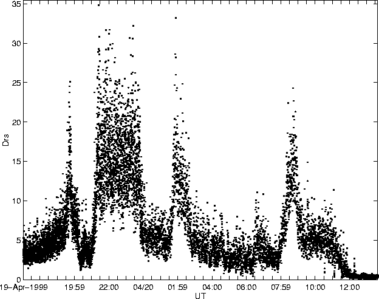

4 'bands' of Drs>10 cm^2:
Strong tremor had been increasing for several hours, but at 1940 an abrupt increase occured, possibly marking the onset of a vent clearing eruption.
Rapid increase began around 0445, peaking between 0545 & 0715, petering out after 0745. Two further strong pulses centred on 0845 & 1000 occured each lasting for about 1 hour.